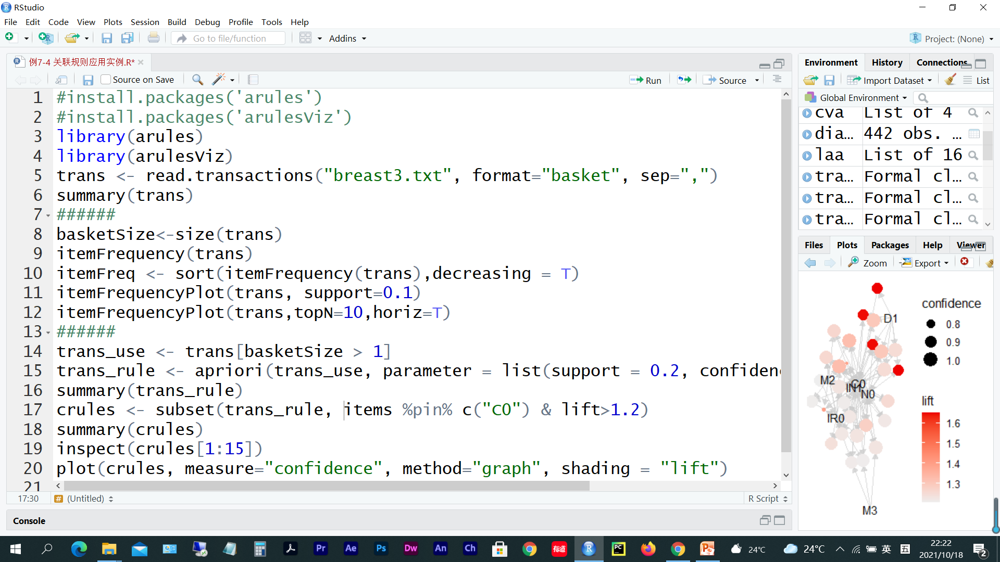
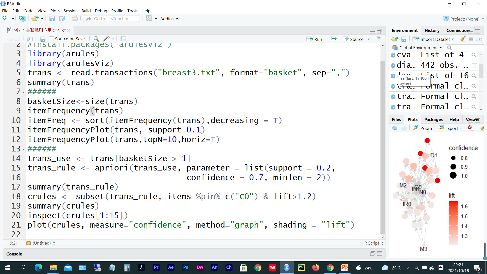
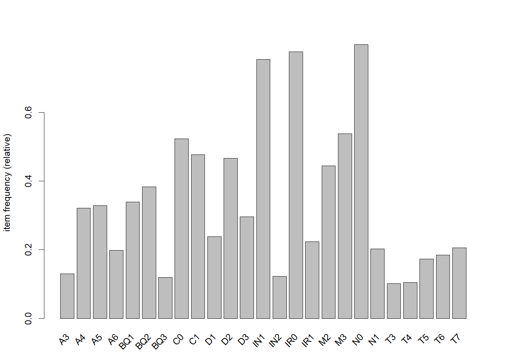
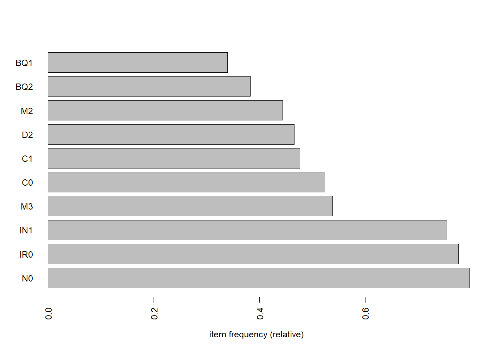
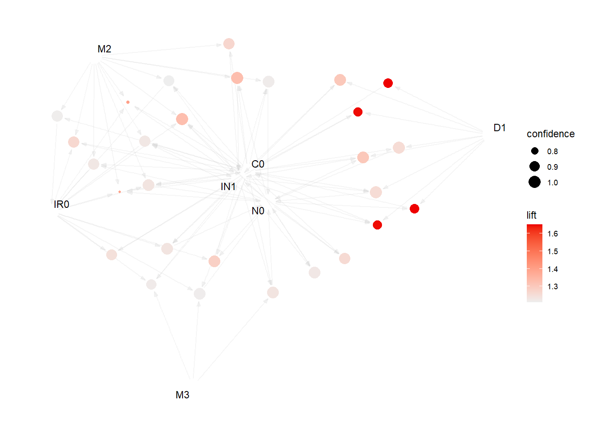
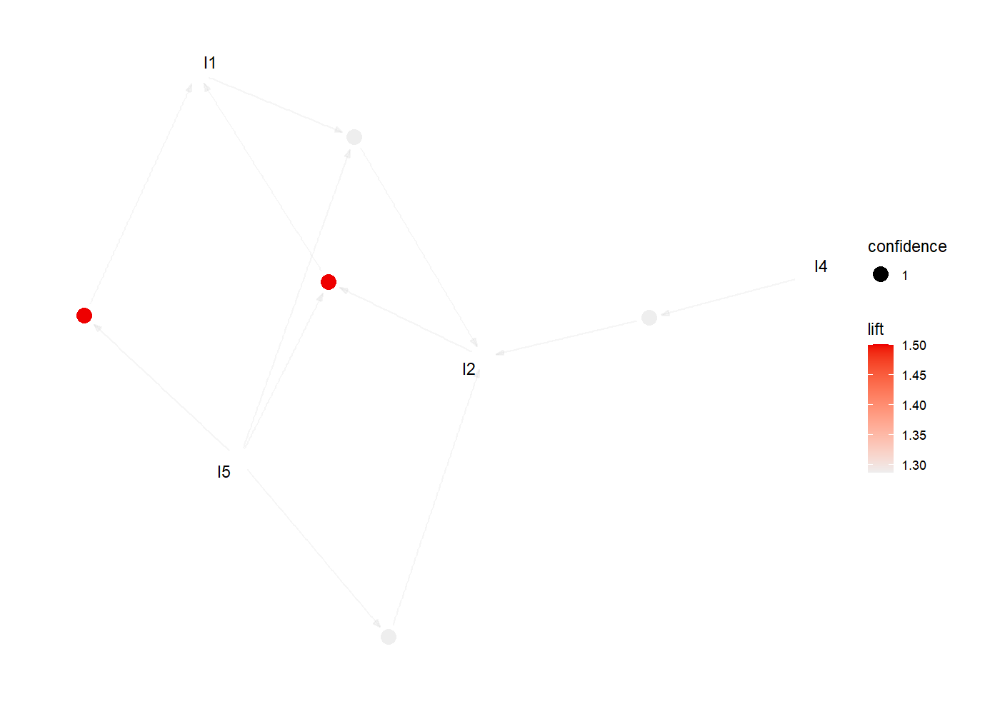
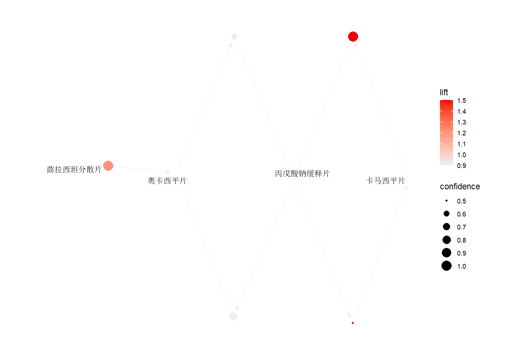

> 本文件由 `大数据实验4.pptx` 整理而成；
> 课件本身（.pptx）未收录进本仓库；文中的图片是幻灯片里原有的公式与数据表。


#install.packages('arules')
#install.packages('arulesViz')
library(arules)
library(arulesViz)
trans = read.transactions('breast31.txt',format = 'basket',sep = ',')
summary(trans)
basketSize = size(trans)
itemFrequency(trans)
itemFreq = sort(itemFrequency(trans),decreasing = T)
itemFrequencyPlot(trans,support = 0.1)
itemFrequencyPlot(trans,topN = 10,horiz = T)
trans_use = trans[basketSize > 1]
trans_rule = apriori(trans_use,parameter = list(support = 0.2,
confidence = 0.7,minlen = 2))
summary(trans_rule)
crules = subset(trans_rule,items %pin% c('C0') & lift >1.2)
summary(crules)
inspect(crules[1:15])
plot(crules,measure = 'confidence',method = 'graph',shading = 'lift')
transactions as itemMatrix in sparse format with
277 rows (elements/itemsets/transactions) and
41 columns (items) and a density of 0.2195122
most frequent items:
N0 IR0 IN1 M3 C0 (Other)
221 215 209 149 145 1554
element (itemset/transaction) length distribution:
sizes
9
277
Min. 1st Qu. Median Mean 3rd Qu. Max.
9 9 9 9 9 9
includes extended item information - examples:
labels
1 A2
2 A3
3 A4
A2 A3 A4 A5 A6 A7 BQ1 BQ2
0.003610108 0.129963899 0.321299639 0.328519856 0.198555957 0.018050542 0.339350181 0.382671480
BQ3 BQ4 BQ5 C0 C1 D1 D2 D3
0.119133574 0.083032491 0.075812274 0.523465704 0.476534296 0.238267148 0.465703971 0.296028881
IN1 IN2 IN3 IN4 IN5 IN6 IN7 IR0
0.754512635 0.122743682 0.061371841 0.025270758 0.010830325 0.021660650 0.003610108 0.776173285
IR1 M1 M2 M3 N0 N1 T1 T10
0.223826715 0.018050542 0.444043321 0.537906137 0.797833935 0.202166065 0.028880866 0.010830325
T11 T2 T3 T4 T5 T6 T7 T8
0.028880866 0.014440433 0.101083032 0.104693141 0.173285199 0.184115523 0.205776173 0.068592058
T9
0.079422383
Apriori
Parameter specification:
confidence minval smax arem aval originalSupport maxtime support minlen maxlen target ext
0.7 0.1 1 none FALSE TRUE 5 0.2 2 10 rules TRUE
Algorithmic control:
filter tree heap memopt load sort verbose
0.1 TRUE TRUE FALSE TRUE 2 TRUE
Absolute minimum support count: 55
set item appearances ...[0 item(s)] done [0.00s].
set transactions ...[41 item(s), 277 transaction(s)] done [0.00s].
sorting and recoding items ... [17 item(s)] done [0.00s].
creating transaction tree ... done [0.00s].
checking subsets of size 1 2 3 4 5 done [0.00s].
writing ... [168 rule(s)] done [0.00s].
creating S4 object ... done [0.00s].
set of 168 rules
rule length distribution (lhs + rhs):sizes
2 3 4 5
36 82 46 4
Min. 1st Qu. Median Mean 3rd Qu. Max.
2.000 3.000 3.000 3.107 4.000 5.000
summary of quality measures:
support confidence coverage lift count
Min. :0.2022 Min. :0.7191 Min. :0.2022 Min. :0.9265 Min. : 56.00
1st Qu.:0.2193 1st Qu.:0.8355 1st Qu.:0.2383 1st Qu.:1.0866 1st Qu.: 60.75
Median :0.2383 Median :0.8972 Median :0.2852 Median :1.1773 Median : 66.00
Mean :0.2894 Mean :0.8847 Mean :0.3294 Mean :1.1770 Mean : 80.15
3rd Qu.:0.3249 3rd Qu.:0.9429 3rd Qu.:0.3610 3rd Qu.:1.2327 3rd Qu.: 90.00
Max. :0.7220 Max. :1.0000 Max. :0.7978 Max. :1.7203 Max. :200.00
mining info:
data ntransactions support confidence
trans_use 277 0.2 0.7
call
apriori(data = trans_use, parameter = list(support = 0.2, confidence = 0.7, minlen = 2))
set of 28 rules
rule length distribution (lhs + rhs):sizes
2 3 4 5
1 9 14 4
Min. 1st Qu. Median Mean 3rd Qu. Max.
2.00 3.00 4.00 3.75 4.00 5.00
summary of quality measures:
support confidence coverage lift count
Min. :0.2022 Min. :0.7284 Min. :0.2022 Min. :1.208 Min. : 56.00
1st Qu.:0.2058 1st Qu.:0.9326 1st Qu.:0.2202 1st Qu.:1.226 1st Qu.: 57.00
Median :0.2130 Median :0.9538 Median :0.2310 Median :1.255 Median : 59.00
Mean :0.2537 Mean :0.9357 Mean :0.2714 Mean :1.318 Mean : 70.29
3rd Qu.:0.2247 3rd Qu.:0.9827 3rd Qu.:0.2545 3rd Qu.:1.325 3rd Qu.: 62.25
Max. :0.4621 Max. :1.0000 Max. :0.4874 Max. :1.650 Max. :128.00
mining info:
data ntransactions support confidence
trans_use 277 0.2 0.7
call
apriori(data = trans_use, parameter = list(support = 0.2, confidence = 0.7, minlen = 2))
lhs rhs support confidence coverage lift count
[1] {D1} => {C0} 0.2057762 0.8636364 0.2382671 1.649843 57
[2] {C0, D1} => {IN1} 0.2021661 0.9824561 0.2057762 1.302107 56
[3] {D1, IN1} => {C0} 0.2021661 0.8615385 0.2346570 1.645836 56
[4] {C0, D1} => {N0} 0.2057762 1.0000000 0.2057762 1.253394 57
[5] {D1, N0} => {C0} 0.2057762 0.8636364 0.2382671 1.649843 57
[6] {C0, M2} => {IN1} 0.2310469 0.9552239 0.2418773 1.266014 64
[7] {C0, M2} => {IR0} 0.2274368 0.9402985 0.2418773 1.211454 63
[8] {C0, IR0} => {IN1} 0.4368231 0.9379845 0.4657040 1.243166 121
[9] {C0, IN1} => {N0} 0.4620939 0.9770992 0.4729242 1.224690 128
[10] {C0, N0} => {IN1} 0.4620939 0.9481481 0.4873646 1.256637 128
[11] {C0, D1, IN1} => {N0} 0.2021661 1.0000000 0.2021661 1.253394 56
[12] {C0, D1, N0} => {IN1} 0.2021661 0.9824561 0.2057762 1.302107 56
[13] {D1, IN1, N0} => {C0} 0.2021661 0.8615385 0.2346570 1.645836 56
[14] {C0, IN1, M2} => {IR0} 0.2166065 0.9375000 0.2310469 1.207849 60
[15] {C0, IR0, M2} => {IN1} 0.2166065 0.9523810 0.2274368 1.262247 60



| <a:txBody><a:bodyPr/><a:lstStyle/><a:p><a:pPr algn="ctr"><a:spcAft><a:spcPts val="0"/></a:spcAft></a:pPr><a:r><a:rPr lang="zh-CN" sz="2400" kern="100" dirty="0"><a:effectLst/><a:latin typeface="Times New Roman" panose="02020603050405020304"/><a:ea typeface="宋体" panose="02010600030101010101" pitchFamily="2" charset="-122"/></a:rPr><a:t>事务 | <a:txBody><a:bodyPr/><a:lstStyle/><a:p><a:pPr algn="ctr"><a:spcAft><a:spcPts val="0"/></a:spcAft></a:pPr><a:r><a:rPr lang="zh-CN" sz="2400" kern="100"><a:effectLst/><a:latin typeface="Times New Roman" panose="02020603050405020304"/><a:ea typeface="宋体" panose="02010600030101010101" pitchFamily="2" charset="-122"/></a:rPr><a:t>项目 |
| <a:txBody><a:bodyPr/><a:lstStyle/><a:p><a:pPr algn="ctr"><a:spcAft><a:spcPts val="0"/></a:spcAft></a:pPr><a:r><a:rPr lang="en-US" sz="2400" kern="100" dirty="0"><a:effectLst/><a:latin typeface="宋体" panose="02010600030101010101" pitchFamily="2" charset="-122"/><a:ea typeface="宋体" panose="02010600030101010101" pitchFamily="2" charset="-122"/></a:rPr><a:t>T001 | <a:txBody><a:bodyPr/><a:lstStyle/><a:p><a:pPr algn="just"><a:spcAft><a:spcPts val="0"/></a:spcAft></a:pPr><a:r><a:rPr lang="en-US" sz="2400" kern="100"><a:effectLst/><a:latin typeface="宋体" panose="02010600030101010101" pitchFamily="2" charset="-122"/><a:ea typeface="宋体" panose="02010600030101010101" pitchFamily="2" charset="-122"/></a:rPr><a:t>I1，I2，I5 |
| <a:txBody><a:bodyPr/><a:lstStyle/><a:p><a:pPr algn="ctr"><a:spcAft><a:spcPts val="0"/></a:spcAft></a:pPr><a:r><a:rPr lang="en-US" sz="2400" kern="100" dirty="0"><a:effectLst/><a:latin typeface="宋体" panose="02010600030101010101" pitchFamily="2" charset="-122"/><a:ea typeface="宋体" panose="02010600030101010101" pitchFamily="2" charset="-122"/></a:rPr><a:t>T002 | <a:txBody><a:bodyPr/><a:lstStyle/><a:p><a:pPr algn="just"><a:spcAft><a:spcPts val="0"/></a:spcAft></a:pPr><a:r><a:rPr lang="en-US" sz="2400" kern="100"><a:effectLst/><a:latin typeface="宋体" panose="02010600030101010101" pitchFamily="2" charset="-122"/><a:ea typeface="宋体" panose="02010600030101010101" pitchFamily="2" charset="-122"/></a:rPr><a:t>I2，I4 |
| <a:txBody><a:bodyPr/><a:lstStyle/><a:p><a:pPr algn="ctr"><a:spcAft><a:spcPts val="0"/></a:spcAft></a:pPr><a:r><a:rPr lang="en-US" sz="2400" kern="100" dirty="0"><a:effectLst/><a:latin typeface="宋体" panose="02010600030101010101" pitchFamily="2" charset="-122"/><a:ea typeface="宋体" panose="02010600030101010101" pitchFamily="2" charset="-122"/></a:rPr><a:t>T003 | <a:txBody><a:bodyPr/><a:lstStyle/><a:p><a:pPr algn="just"><a:spcAft><a:spcPts val="0"/></a:spcAft></a:pPr><a:r><a:rPr lang="en-US" sz="2400" kern="100" dirty="0"><a:effectLst/><a:latin typeface="宋体" panose="02010600030101010101" pitchFamily="2" charset="-122"/><a:ea typeface="宋体" panose="02010600030101010101" pitchFamily="2" charset="-122"/></a:rPr><a:t>I2，I3 |
| <a:txBody><a:bodyPr/><a:lstStyle/><a:p><a:pPr algn="ctr"><a:spcAft><a:spcPts val="0"/></a:spcAft></a:pPr><a:r><a:rPr lang="en-US" sz="2400" kern="100"><a:effectLst/><a:latin typeface="宋体" panose="02010600030101010101" pitchFamily="2" charset="-122"/><a:ea typeface="宋体" panose="02010600030101010101" pitchFamily="2" charset="-122"/></a:rPr><a:t>T004 | <a:txBody><a:bodyPr/><a:lstStyle/><a:p><a:pPr algn="just"><a:spcAft><a:spcPts val="0"/></a:spcAft></a:pPr><a:r><a:rPr lang="en-US" sz="2400" kern="100" dirty="0"><a:effectLst/><a:latin typeface="宋体" panose="02010600030101010101" pitchFamily="2" charset="-122"/><a:ea typeface="宋体" panose="02010600030101010101" pitchFamily="2" charset="-122"/></a:rPr><a:t>I1，I2，I4 |
| <a:txBody><a:bodyPr/><a:lstStyle/><a:p><a:pPr algn="ctr"><a:spcAft><a:spcPts val="0"/></a:spcAft></a:pPr><a:r><a:rPr lang="en-US" sz="2400" kern="100"><a:effectLst/><a:latin typeface="宋体" panose="02010600030101010101" pitchFamily="2" charset="-122"/><a:ea typeface="宋体" panose="02010600030101010101" pitchFamily="2" charset="-122"/></a:rPr><a:t>T005 | <a:txBody><a:bodyPr/><a:lstStyle/><a:p><a:pPr algn="just"><a:spcAft><a:spcPts val="0"/></a:spcAft></a:pPr><a:r><a:rPr lang="en-US" sz="2400" kern="100" dirty="0"><a:effectLst/><a:latin typeface="宋体" panose="02010600030101010101" pitchFamily="2" charset="-122"/><a:ea typeface="宋体" panose="02010600030101010101" pitchFamily="2" charset="-122"/></a:rPr><a:t>I1，I3 |
| <a:txBody><a:bodyPr/><a:lstStyle/><a:p><a:pPr algn="ctr"><a:spcAft><a:spcPts val="0"/></a:spcAft></a:pPr><a:r><a:rPr lang="en-US" sz="2400" kern="100"><a:effectLst/><a:latin typeface="宋体" panose="02010600030101010101" pitchFamily="2" charset="-122"/><a:ea typeface="宋体" panose="02010600030101010101" pitchFamily="2" charset="-122"/></a:rPr><a:t>T006 | <a:txBody><a:bodyPr/><a:lstStyle/><a:p><a:pPr algn="just"><a:spcAft><a:spcPts val="0"/></a:spcAft></a:pPr><a:r><a:rPr lang="en-US" sz="2400" kern="100" dirty="0"><a:effectLst/><a:latin typeface="宋体" panose="02010600030101010101" pitchFamily="2" charset="-122"/><a:ea typeface="宋体" panose="02010600030101010101" pitchFamily="2" charset="-122"/></a:rPr><a:t>I2，I3 |
| <a:txBody><a:bodyPr/><a:lstStyle/><a:p><a:pPr algn="ctr"><a:spcAft><a:spcPts val="0"/></a:spcAft></a:pPr><a:r><a:rPr lang="en-US" sz="2400" kern="100"><a:effectLst/><a:latin typeface="宋体" panose="02010600030101010101" pitchFamily="2" charset="-122"/><a:ea typeface="宋体" panose="02010600030101010101" pitchFamily="2" charset="-122"/></a:rPr><a:t>T007 | <a:txBody><a:bodyPr/><a:lstStyle/><a:p><a:pPr algn="just"><a:spcAft><a:spcPts val="0"/></a:spcAft></a:pPr><a:r><a:rPr lang="en-US" sz="2400" kern="100" dirty="0"><a:effectLst/><a:latin typeface="宋体" panose="02010600030101010101" pitchFamily="2" charset="-122"/><a:ea typeface="宋体" panose="02010600030101010101" pitchFamily="2" charset="-122"/></a:rPr><a:t>I1，I3 |
| <a:txBody><a:bodyPr/><a:lstStyle/><a:p><a:pPr algn="ctr"><a:spcAft><a:spcPts val="0"/></a:spcAft></a:pPr><a:r><a:rPr lang="en-US" sz="2400" kern="100"><a:effectLst/><a:latin typeface="宋体" panose="02010600030101010101" pitchFamily="2" charset="-122"/><a:ea typeface="宋体" panose="02010600030101010101" pitchFamily="2" charset="-122"/></a:rPr><a:t>T008 | <a:txBody><a:bodyPr/><a:lstStyle/><a:p><a:pPr algn="just"><a:spcAft><a:spcPts val="0"/></a:spcAft></a:pPr><a:r><a:rPr lang="en-US" sz="2400" kern="100" dirty="0"><a:effectLst/><a:latin typeface="宋体" panose="02010600030101010101" pitchFamily="2" charset="-122"/><a:ea typeface="宋体" panose="02010600030101010101" pitchFamily="2" charset="-122"/></a:rPr><a:t>I1，I2，I3，I5 |
| <a:txBody><a:bodyPr/><a:lstStyle/><a:p><a:pPr algn="ctr"><a:spcAft><a:spcPts val="0"/></a:spcAft></a:pPr><a:r><a:rPr lang="en-US" sz="2400" kern="100" dirty="0"><a:effectLst/><a:latin typeface="宋体" panose="02010600030101010101" pitchFamily="2" charset="-122"/><a:ea typeface="宋体" panose="02010600030101010101" pitchFamily="2" charset="-122"/></a:rPr><a:t>T009 | <a:txBody><a:bodyPr/><a:lstStyle/><a:p><a:pPr algn="just"><a:spcAft><a:spcPts val="0"/></a:spcAft></a:pPr><a:r><a:rPr lang="en-US" sz="2400" kern="100" dirty="0"><a:effectLst/><a:latin typeface="宋体" panose="02010600030101010101" pitchFamily="2" charset="-122"/><a:ea typeface="宋体" panose="02010600030101010101" pitchFamily="2" charset="-122"/></a:rPr><a:t>I1，I2，I3 |
library(arules)
library(arulesViz)
trans2 <- as(
list(
c("I1","I2","I5"),
c("I2","I4"),
c("I2","I3"),
c("I1","I2","I4"),
c("I1","I3"),
c("I2","I3"),
c("I1","I3"),
c("I1","I2","I3","I5"),
c("I1","I2","I3")
),
"transactions"
)
rules2 <- apriori(trans2,
parameter = list(supp = 0.2, conf = 0.7, minlen = 2))
summary(rules2)
plot(rules2, measure = "confidence", method = "graph", shading = "lift")
Apriori
Parameter specification:
confidence minval smax arem aval originalSupport maxtime support minlen maxlen target ext
0.7 0.1 1 none FALSE TRUE 5 0.2 2 10 rules TRUE
Algorithmic control:
filter tree heap memopt load sort verbose
0.1 TRUE TRUE FALSE TRUE 2 TRUE
Absolute minimum support count: 1
set item appearances ...[0 item(s)] done [0.00s].
set transactions ...[5 item(s), 9 transaction(s)] done [0.00s].
sorting and recoding items ... [5 item(s)] done [0.00s].
creating transaction tree ... done [0.00s].
checking subsets of size 1 2 3 done [0.00s].
writing ... [5 rule(s)] done [0.00s].
creating S4 object ... done [0.00s].
set of 5 rules
rule length distribution (lhs + rhs):sizes
2 3
3 2
Min. 1st Qu. Median Mean 3rd Qu. Max.
2.0 2.0 2.0 2.4 3.0 3.0
summary of quality measures:
support confidence coverage lift count
Min. :0.2222 Min. :1 Min. :0.2222 Min. :1.286 Min. :2
1st Qu.:0.2222 1st Qu.:1 1st Qu.:0.2222 1st Qu.:1.286 1st Qu.:2
Median :0.2222 Median :1 Median :0.2222 Median :1.286 Median :2
Mean :0.2222 Mean :1 Mean :0.2222 Mean :1.371 Mean :2
3rd Qu.:0.2222 3rd Qu.:1 3rd Qu.:0.2222 3rd Qu.:1.500 3rd Qu.:2
Max. :0.2222 Max. :1 Max. :0.2222 Max. :1.500 Max. :2
mining info:
data ntransactions support confidence
trans2 9 0.2 0.7
call
apriori(data = trans2, parameter = list(supp = 0.2, conf = 0.7, minlen = 2))

| <a:txBody><a:bodyPr/><a:p><a:pPr algn="ctr"><a:lnSpc><a:spcPct val="120000"/></a:lnSpc><a:spcBef><a:spcPts val="0"/></a:spcBef><a:spcAft><a:spcPts val="0"/></a:spcAft></a:pPr><a:r><a:rPr lang="zh-CN" altLang="en-US" sz="1200" b="1" spc="120"><a:latin typeface="微软雅黑" panose="020B0503020204020204" charset="-122"/><a:ea typeface="微软雅黑" panose="020B0503020204020204" charset="-122"/></a:rPr><a:t>病人编号 | <a:txBody><a:bodyPr/><a:p><a:pPr algn="ctr"><a:lnSpc><a:spcPct val="120000"/></a:lnSpc><a:spcBef><a:spcPts val="0"/></a:spcBef><a:spcAft><a:spcPts val="0"/></a:spcAft></a:pPr><a:r><a:rPr lang="zh-CN" altLang="en-US" sz="1200" b="1" spc="120"><a:latin typeface="微软雅黑" panose="020B0503020204020204" charset="-122"/><a:ea typeface="微软雅黑" panose="020B0503020204020204" charset="-122"/></a:rPr><a:t>药品 |
| <a:txBody><a:bodyPr/><a:p><a:pPr algn="ctr"><a:lnSpc><a:spcPct val="120000"/></a:lnSpc><a:spcBef><a:spcPts val="0"/></a:spcBef><a:spcAft><a:spcPts val="0"/></a:spcAft></a:pPr><a:r><a:rPr lang="en-US" altLang="zh-CN" sz="1000" b="0" spc="60"><a:latin typeface="微软雅黑" panose="020B0503020204020204" charset="-122"/><a:ea typeface="微软雅黑" panose="020B0503020204020204" charset="-122"/></a:rPr><a:t>11000 | <a:txBody><a:bodyPr/><a:p><a:pPr algn="ctr"><a:lnSpc><a:spcPct val="120000"/></a:lnSpc><a:spcBef><a:spcPts val="0"/></a:spcBef><a:spcAft><a:spcPts val="0"/></a:spcAft></a:pPr><a:r><a:rPr lang="zh-CN" altLang="en-US" sz="1000" b="0" spc="60"><a:latin typeface="微软雅黑" panose="020B0503020204020204" charset="-122"/><a:ea typeface="微软雅黑" panose="020B0503020204020204" charset="-122"/><a:cs typeface="微软雅黑" panose="020B0503020204020204" charset="-122"/></a:rPr><a:t>卡马西平片, 丙戊酸钠缓释片 |
| <a:txBody><a:bodyPr/><a:p><a:pPr algn="ctr"><a:lnSpc><a:spcPct val="120000"/></a:lnSpc><a:spcBef><a:spcPts val="0"/></a:spcBef><a:spcAft><a:spcPts val="0"/></a:spcAft></a:pPr><a:r><a:rPr lang="en-US" altLang="zh-CN" sz="1000" b="0" spc="60"><a:latin typeface="微软雅黑" panose="020B0503020204020204" charset="-122"/><a:ea typeface="微软雅黑" panose="020B0503020204020204" charset="-122"/></a:rPr><a:t>11001 | <a:txBody><a:bodyPr/><a:p><a:pPr algn="ctr"><a:lnSpc><a:spcPct val="120000"/></a:lnSpc><a:spcBef><a:spcPts val="0"/></a:spcBef><a:spcAft><a:spcPts val="0"/></a:spcAft></a:pPr><a:r><a:rPr lang="zh-CN" altLang="en-US" sz="1000" b="0" spc="60"><a:latin typeface="微软雅黑" panose="020B0503020204020204" charset="-122"/><a:ea typeface="微软雅黑" panose="020B0503020204020204" charset="-122"/><a:cs typeface="微软雅黑" panose="020B0503020204020204" charset="-122"/></a:rPr><a:t>奥卡西平片, 茴拉西坦分散片 |
| <a:txBody><a:bodyPr/><a:p><a:pPr algn="ctr"><a:lnSpc><a:spcPct val="120000"/></a:lnSpc><a:spcBef><a:spcPts val="0"/></a:spcBef><a:spcAft><a:spcPts val="0"/></a:spcAft></a:pPr><a:r><a:rPr lang="en-US" altLang="zh-CN" sz="1000" b="0" spc="60"><a:latin typeface="微软雅黑" panose="020B0503020204020204" charset="-122"/><a:ea typeface="微软雅黑" panose="020B0503020204020204" charset="-122"/></a:rPr><a:t>11002 | <a:txBody><a:bodyPr/><a:p><a:pPr algn="ctr"><a:lnSpc><a:spcPct val="120000"/></a:lnSpc><a:spcBef><a:spcPts val="0"/></a:spcBef><a:spcAft><a:spcPts val="0"/></a:spcAft></a:pPr><a:r><a:rPr lang="zh-CN" altLang="en-US" sz="1000" b="0" spc="60"><a:latin typeface="微软雅黑" panose="020B0503020204020204" charset="-122"/><a:ea typeface="微软雅黑" panose="020B0503020204020204" charset="-122"/><a:cs typeface="微软雅黑" panose="020B0503020204020204" charset="-122"/></a:rPr><a:t>奥卡西平片, 丙戊酸钠口服液 |
| <a:txBody><a:bodyPr/><a:p><a:pPr algn="ctr"><a:lnSpc><a:spcPct val="120000"/></a:lnSpc><a:spcBef><a:spcPts val="0"/></a:spcBef><a:spcAft><a:spcPts val="0"/></a:spcAft></a:pPr><a:r><a:rPr lang="en-US" altLang="zh-CN" sz="1000" b="0" spc="60"><a:latin typeface="微软雅黑" panose="020B0503020204020204" charset="-122"/><a:ea typeface="微软雅黑" panose="020B0503020204020204" charset="-122"/></a:rPr><a:t>11003 | <a:txBody><a:bodyPr/><a:p><a:pPr algn="ctr"><a:lnSpc><a:spcPct val="120000"/></a:lnSpc><a:spcBef><a:spcPts val="0"/></a:spcBef><a:spcAft><a:spcPts val="0"/></a:spcAft></a:pPr><a:r><a:rPr lang="zh-CN" altLang="en-US" sz="1000" b="0" spc="60"><a:latin typeface="微软雅黑" panose="020B0503020204020204" charset="-122"/><a:ea typeface="微软雅黑" panose="020B0503020204020204" charset="-122"/><a:cs typeface="微软雅黑" panose="020B0503020204020204" charset="-122"/></a:rPr><a:t>丙戊酸钠缓释片, 奥卡西平片, 茴拉西坦分散片 |
| <a:txBody><a:bodyPr/><a:p><a:pPr algn="ctr"><a:lnSpc><a:spcPct val="120000"/></a:lnSpc><a:spcBef><a:spcPts val="0"/></a:spcBef><a:spcAft><a:spcPts val="0"/></a:spcAft></a:pPr><a:r><a:rPr lang="en-US" altLang="zh-CN" sz="1000" b="0" spc="60"><a:latin typeface="微软雅黑" panose="020B0503020204020204" charset="-122"/><a:ea typeface="微软雅黑" panose="020B0503020204020204" charset="-122"/></a:rPr><a:t>11004 | <a:txBody><a:bodyPr/><a:p><a:pPr algn="ctr"><a:lnSpc><a:spcPct val="120000"/></a:lnSpc><a:spcBef><a:spcPts val="0"/></a:spcBef><a:spcAft><a:spcPts val="0"/></a:spcAft></a:pPr><a:r><a:rPr lang="zh-CN" altLang="en-US" sz="1000" b="0" spc="60"><a:latin typeface="微软雅黑" panose="020B0503020204020204" charset="-122"/><a:ea typeface="微软雅黑" panose="020B0503020204020204" charset="-122"/><a:cs typeface="微软雅黑" panose="020B0503020204020204" charset="-122"/></a:rPr><a:t>丙戊酸钠缓释片, 奥卡西平片 |
| <a:txBody><a:bodyPr/><a:p><a:pPr algn="ctr"><a:lnSpc><a:spcPct val="120000"/></a:lnSpc><a:spcBef><a:spcPts val="0"/></a:spcBef><a:spcAft><a:spcPts val="0"/></a:spcAft></a:pPr><a:r><a:rPr lang="en-US" altLang="zh-CN" sz="1000" b="0" spc="60"><a:latin typeface="微软雅黑" panose="020B0503020204020204" charset="-122"/><a:ea typeface="微软雅黑" panose="020B0503020204020204" charset="-122"/></a:rPr><a:t>11005 | <a:txBody><a:bodyPr/><a:p><a:pPr algn="ctr"><a:lnSpc><a:spcPct val="120000"/></a:lnSpc><a:spcBef><a:spcPts val="0"/></a:spcBef><a:spcAft><a:spcPts val="0"/></a:spcAft></a:pPr><a:r><a:rPr lang="zh-CN" altLang="en-US" sz="1000" b="0" spc="60"><a:latin typeface="微软雅黑" panose="020B0503020204020204" charset="-122"/><a:ea typeface="微软雅黑" panose="020B0503020204020204" charset="-122"/><a:cs typeface="微软雅黑" panose="020B0503020204020204" charset="-122"/></a:rPr><a:t>丙戊酸钠缓释片, 奥卡西平片, 卡马西平片 |
library(arules)
library(arulesViz)
trans3 <- as(
list(
c("卡马西平片", "丙戊酸钠缓释片"),
c("奥卡西平片", "茴拉西坦分散片"),
c("奥卡西平片", "丙戊酸钠口服液"),
c("丙戊酸钠缓释片", "奥卡西平片", "茴拉西坦分散片"),
c("丙戊酸钠缓释片", "奥卡西平片"),
c("丙戊酸钠缓释片", "奥卡西平片", "卡马西平片")
),
"transactions"
)
rules3 <- apriori(trans3,
parameter = list(supp = 0.2, conf = 0.5, minlen = 2))
summary(rules3)
plot(rules3, measure = "confidence", method = "graph", shading = "lift")
Apriori
Parameter specification:
confidence minval smax arem aval originalSupport maxtime support minlen maxlen target ext
0.5 0.1 1 none FALSE TRUE 5 0.2 2 10 rules TRUE
Algorithmic control:
filter tree heap memopt load sort verbose
0.1 TRUE TRUE FALSE TRUE 2 TRUE
Absolute minimum support count: 1
set item appearances ...[0 item(s)] done [0.00s].
set transactions ...[5 item(s), 6 transaction(s)] done [0.00s].
sorting and recoding items ... [4 item(s)] done [0.00s].
creating transaction tree ... done [0.00s].
checking subsets of size 1 2 done [0.00s].
writing ... [5 rule(s)] done [0.00s].
creating S4 object ... done [0.00s].
set of 5 rules
rule length distribution (lhs + rhs):sizes
2
5
Min. 1st Qu. Median Mean 3rd Qu. Max.
2 2 2 2 2 2
summary of quality measures:
support confidence coverage lift count
Min. :0.3333 Min. :0.50 Min. :0.3333 Min. :0.9 Min. :2.0
1st Qu.:0.3333 1st Qu.:0.60 1st Qu.:0.3333 1st Qu.:0.9 1st Qu.:2.0
Median :0.3333 Median :0.75 Median :0.6667 Median :1.2 Median :2.0
Mean :0.4000 Mean :0.77 Mean :0.5667 Mean :1.2 Mean :2.4
3rd Qu.:0.5000 3rd Qu.:1.00 3rd Qu.:0.6667 3rd Qu.:1.5 3rd Qu.:3.0
Max. :0.5000 Max. :1.00 Max. :0.8333 Max. :1.5 Max. :3.0
mining info:
data ntransactions support confidence
trans3 6 0.2 0.5
call
apriori(data = trans3, parameter = list(supp = 0.2, conf = 0.5, minlen = 2))
